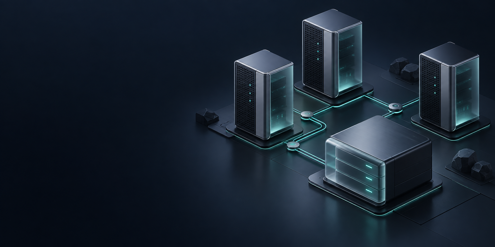
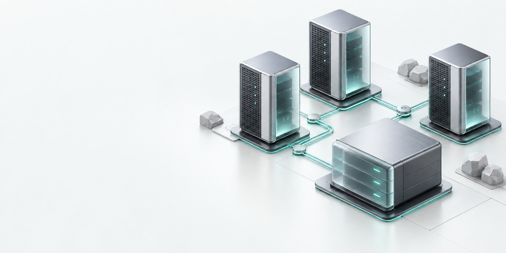

INFRASTRUCTURE /
Toute votre infrastructure.
Les ressources, les tendances et les points d’attention, au même endroit.
Journaux des machines & services
Collecte continue, recherche et archives durables.
Vérification de la collecte continue…
Choisissez une machine, un service et une période de 24 heures maximum.
Aucun journal chargé.
Les messages collectés sont archivés sans purge automatique. La collecte reprend depuis son dernier curseur ; les interruptions et sources indisponibles sont signalées. Masquage automatique des identifiants sensibles · 300 messages par page d’archive · lectures directes limitées à 24 h · messages limités à 1024 caractères après masquage.
Mémoire vive
RAM utiliséeTrafic réseau
RéceptionÉmission
Entrées / sorties disque
LectureÉcriture
Analyse détaillée
Comparer les machines, explorer les tendances et isoler les variations.
Conservation & continuité
Vos relevés détaillés restent disponibles au fil du temps.
Services & incidents
État des contrôles applicatifs et historique des alertes.
| Incident | Machine | Gravité | Ouverture | État |
|---|
Parc machines
Ouvrez une machine pour explorer ses ressources.
| Machine | État | CPU | RAM | Stockage | Réseau ↓ / ↑ | Disponibilité |
|---|
Matériel & système
Capteurs & accélérateurs
Volumes de stockage
Capacité, utilisation et inodesInterfaces réseau
Débit, lien et erreurs| Interface | Lien | Réception | Émission | Vitesse du lien | Erreurs / pertes |
|---|
Processus
| Processus | PID | État | CPU · 1 cœur = 100 % | Mémoire | Threads |
|---|